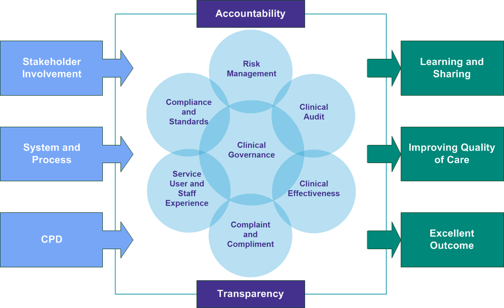

Quality
Totally Healthcare is part of Totally plc – one of England's leading healthcare providers, working across more than 230 locations nationwide to address the challenges of increased demand on health services by delivering high-quality care.
As part of the Totally plc group of companies, our approach to providing high quality, safe services is described below:
Are our services safe? |
We have:
|
Are services effective? |
We:
|
Are services caring? |
We:
|
Are services reactive? |
We:
|
Are services well-led? |
We:
|
Our aim is excellence in care and patient safety.
Our highly experienced clinical team is committed to providing a quality patient experience in a wide range of specialities, helping to reduce patient waiting times.
We work to local and national quality standards in whatever we do and our management team, who have more than 85 years’ experience between them, ensure that we comply or excel in our services.
Quality and safety are a priority for us throughout the service: from recruiting only the best clinicians through to setting up our clinical sessions to the highest standards. We prepare and mobilise using well-tried and tested approaches to support clinicians, patients and local teams. Most of all we assist in reducing the risks patients face by waiting too long for diagnosis or treatment.
Through working in this way, we ensure that all staff working with us understand our absolute commitment to delivering safe, efficient and kindly care.
Totally Healthcare Ltd (THC) will always seek external accreditation wherever it is required, and our service is benchmarked using national and local standards e.g. BSG, JAG, RCOP- Quality standards Ophthalmology.
Totally Healthcare believes the key to good governance is embedded in the culture of the company at all levels. This is supported with the following measurable processes:
- Robust registration criteria to ensure the highest quality of clinical staff
- Regular improvement and learning processes including regular policy reviews
- A thorough audit framework programme
- A systematic process for gathering and analysing patient feedback
- A regular cycle of KPI monitoring
- Adherence to national Standards for multiple specialties
Totally Healthcare works within a heavily regulated sector and the standards they expect, together with the requirements of our commissioners and customers set clear parameters for us to work to. We carefully design and expertly deliver clinical services that are safer for both patients and organisation alike. This ensures a clinical effective insourcing service solution.
We are committed to ensuring the safety of patients, staff and the public through the integrated management of all aspects of governance and risk
